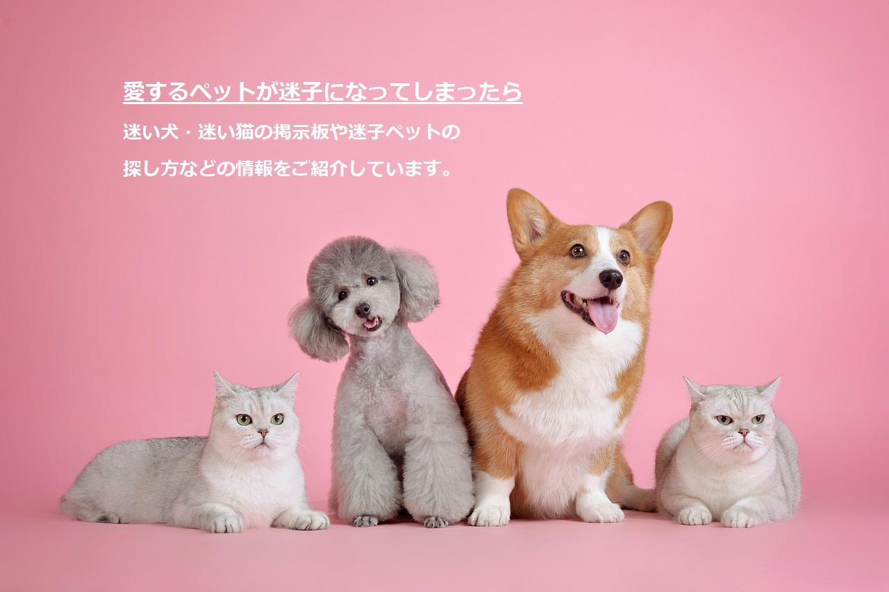

ホーム
ペットニュース
特集記事
迷子犬
迷子猫
ペットの健康
ペットの病気
動物図鑑
不審なメールにご注意下さい

迷子犬
掲示板
迷子犬
掲示板
おすすめ特集記事
猫が自宅から迷子になったらすること
猫が自宅から迷子になったらすることを「5つの手順」にして紹介しています。
迷子猫の探し方がわかる5つの対処法
実際に見つかった9つの実例を紹介しています。
迷子犬の探し方がわかる5つの対処法
実際に見つかった9つの実例を紹介しています。
愛犬がおうちに帰ってきたらすること
愛犬がおうちに帰ってきたら飼い主さんが「すること」を5つご紹介しています。
愛猫がおうちに帰ってきたらすること
愛猫がおうちに帰ってきたら飼い主さんが「すること」を5つご紹介しています。
猫が帰ってこない4つの理由
なかなか帰ってこないときに考えられる4つの理由を紹介しています。
犬が迷子になる理由 TOP8
犬が迷子になる理由をランキング形式でまとめました。
猫が迷子になる理由 TOP6
猫が迷子になる理由をランキング形式でまとめました。
迷子になる原因とその予防
迷子にならない為の予防策を知っておくのはもちろんのこと、迷子になる原因を知っておくことは重要です。
ペット探偵とは？
ペット探偵に依頼したときの捜索方法、依頼手順、料金、発見率について紹介しています。
迷子犬の行動範囲
迷子犬の移動距離を、体格差・年齢別・性別に分けて紹介しています。
迷子猫を保護したら
迷子猫を保護した時の猫への接し方やどこに連絡すればいいのか紹介しています。
迷子犬を保護したら
迷子犬を保護した時の犬への接し方やどこに連絡すればいいのか紹介しています。
迷子猫のポスターの作り方と貼り方
できるだけ多くの人に声をかけ、ポスターもいろんな場所に貼りましょう。
迷子犬のポスターの作り方と貼り方
できるだけ多くの人に声をかけ、ポスターもいろんな場所に貼りましょう。
迷子猫の探し方
迷子猫を探すときの鉄則はいなくなった場所の近辺を探すことです。
全ての特集記事を見る
スポンサーリンク
ペットニュース
迷い犬の解決事例 2020年1月編
2020年1月に掲示板に投稿された迷い犬の解決事例をまとめました。
迷い猫の解決事例 2020年1月編
2020年1月に掲示板に投稿された迷い猫の解決事例をまとめました。
迷子猫のアンケート結果（2019年8月～9月）
迷子猫の掲示板に投稿して頂いた方を対象にアンケートを実施しました。
全てのペットニュースを見る
お知らせ
2022/6/15
『猫と暮らしている人の やさしくわかる防災と避難』に掲載されました！
2022/3/31
犬・猫が迷子になった方へのお願い。
2022/2/1
地図の表示制限について
全てのお知らせを見る
フォローする
いいね！する
スポンサーリンク
迷子犬の掲示板
投稿件数17469件
探しています。目撃情報下さい
愛媛県
2022-05-14
迷子：NO.17470
探しています。目撃情報下さい
三重県
2022-05-14
迷子：NO.17469
探しています。目撃情報下さい
埼玉県
2022-05-14
迷子：NO.17468
探しています。目撃情報下さい
福岡県
2022-05-14
迷子：NO.17467
探しています。目撃情報下さい
静岡県
2022-05-14
迷子：NO.17466
迷子犬の掲示板
迷子犬の掲示板について
迷子犬の探し方
迷子犬範囲検索
迷子犬の特集記事
迷子猫の掲示板
投稿件数17469件
探しています。目撃情報下さい
埼玉県
2022-05-14
迷子：NO.31372
探しています。目撃情報下さい
栃木県
2022-05-14
迷子：NO.31371
探しています。目撃情報下さい
大阪府
2022-05-14
迷子：NO.31370
探しています。目撃情報下さい
千葉県
2022-05-14
迷子：NO.31369
探しています。目撃情報下さい
山形県
2022-05-14
迷子：NO.31368
迷子猫の掲示板
迷子猫の掲示板について
迷子猫の探し方
迷子猫範囲検索
迷子猫の特集記事
Twitter
と
Facebook
も更新中
フォローする
いいね！する